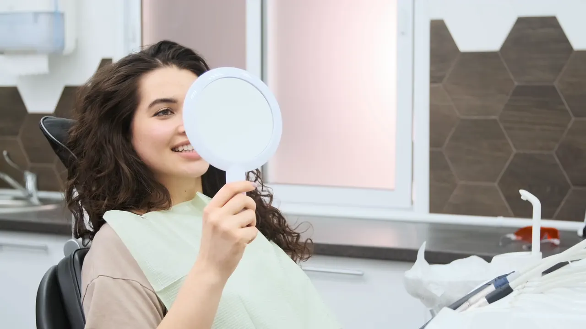
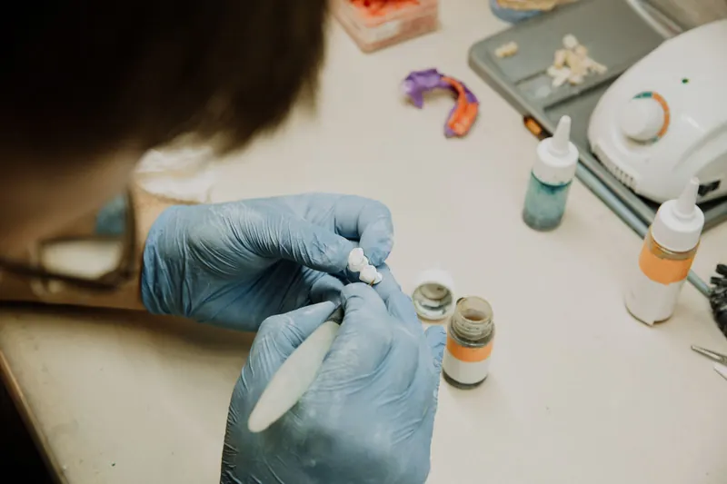
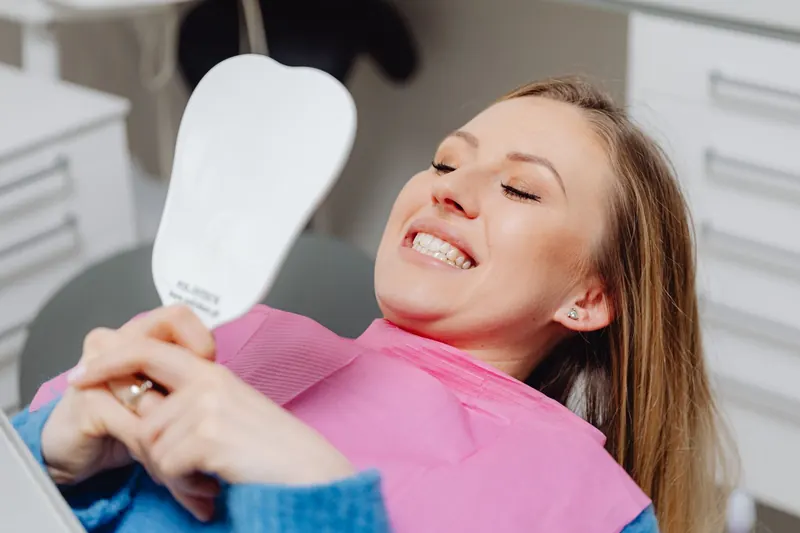
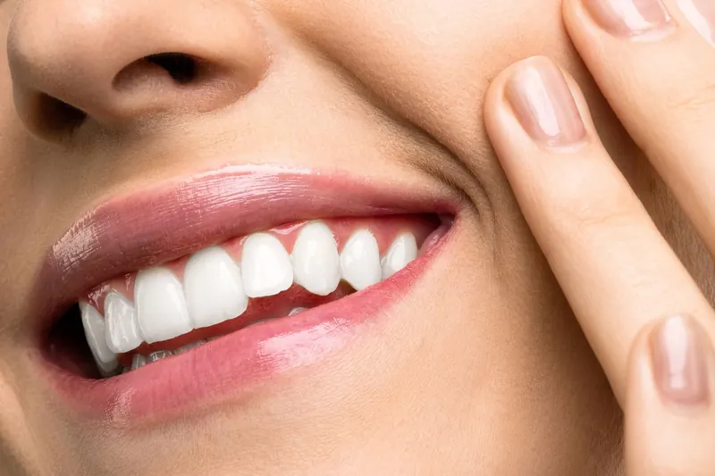
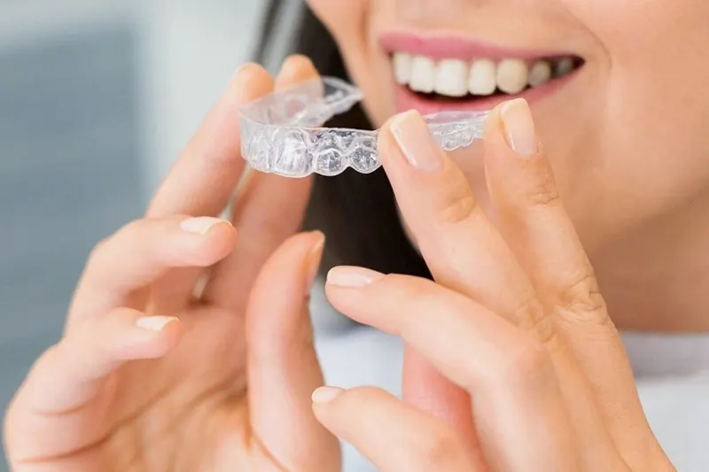
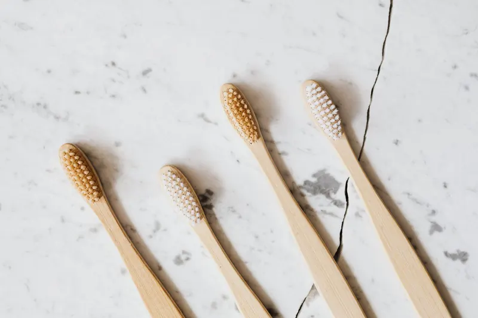
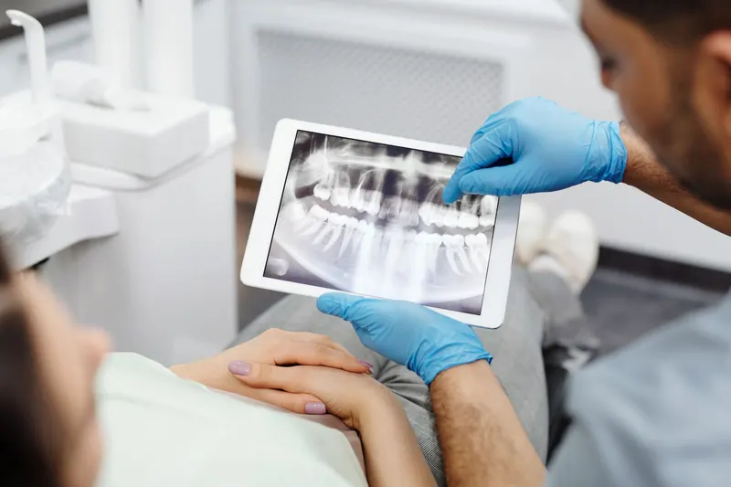
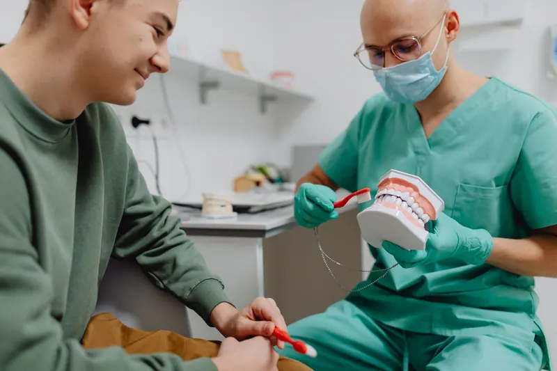
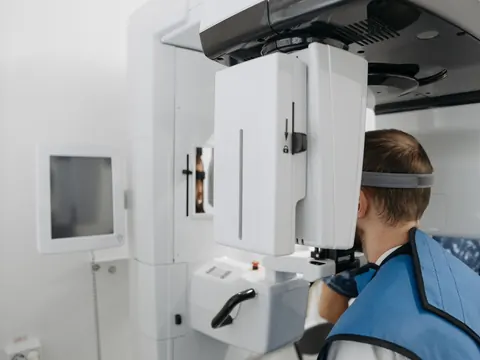

Gülüşünüz, sizinle birlikte planlanır.
Ağız ve diş sağlığında size özel tedavi planı
Avenora Dental'de tedavi planı, klinikte yapılan muayene sonrasında size özel olarak hazırlanır. Tedavi seçenekleri ve süreç, hekiminizle birlikte konuşulur.
Instagram'dan bize yazın
Tedavilerimiz
Her tedavi, muayene ve röntgenden sonra hekiminizle konuştuğunuz plana göre yapılır.

İmplant
Eksik dişlerin yerine, çene kemiğine yerleştirilen yapay kök üzerine yapılan sabit diş.

Zirkonyum kaplama
Doğal diş görünümüne yakın, metal desteksiz kaplama ve köprüler.

Lamine (porselen yaprak)
Dişlerin ön yüzüne yapıştırılan ince porselen yapraklar.

Gülüş tasarımı
Diş biçimi, rengi ve diziliminin yüz oranlarıyla birlikte planlanması.

Diş beyazlatma
Diş renginin hekim kontrolünde açılması.

Ortodonti ve şeffaf plak
Çapraşık dişlerin tel ya da şeffaf plaklarla düzeltilmesi.

Çocuk diş tedavisi
Süt ve kalıcı dişlerin korunmasına yönelik muayene ve tedaviler.

Kanal tedavisi
Zarar görmüş diş sinirinin temizlenerek dişin korunması.

Diş taşı temizliği
Diş yüzeyinde biriken taş ve plağın temizlenmesi.
Klinikte sizi neler bekliyor
Planlama, röntgen ve restorasyon aynı çatı altında, size danışılarak yürür.

Zirkonyum, lamine ve gülüş tasarımı restorasyonları klinik laboratuvarımızda hazırlanır.

Panoramik röntgen klinikte çekilir.

Renk seçimine hasta, hekim ve teknisyen birlikte bakar.

Pazartesi-Cumartesi açığız.
İlk mesajdan tedaviye
Süreç her hastada aynı sırayla ilerler; ne zaman ne olacağını baştan bilirsiniz.
Instagram'dan yazın
Sorunuzu ve size uyan günleri iletin; randevu için ekibimiz size döner.
Muayene ve röntgen
Hekiminiz ağız içini inceler; panoramik röntgen klinikte çekilir.
Planı birlikte konuşun
Tedavi seçenekleri ve süreç, hekiminizle birlikte konuşulur.
Tedavi ve kontroller
Tedaviniz planlandığı gibi yapılır, kontrol randevularıyla takip edilir.
Klinikten


Sık sorulanlar
Randevu nasıl alırım?
Instagram hesabımızdan mesaj gönderin; uygun gün ve saat için ekibimiz size yazar.
Tedavi planım ne zaman belli olur?
Muayene ve gerekli röntgenden sonra hekiminiz size özel planı hazırlar ve seçenekleri sizinle konuşur.
Hangi günler açıksınız?
Pazartesiden cumartesiye kadar açığız.
Röntgen için başka bir yere gitmem gerekir mi?
Hayır, panoramik röntgen klinikte çekilir.
Çocuklar için tedavi yapılıyor mu?
Evet. Süt ve kalıcı dişlerin korunmasına yönelik muayene ve tedaviler yapılır.
Aklınızdaki soruyu bize yazın.
Instagram hesabımızdan yazdığınız mesajlara ekibimiz yanıt verir.
Instagram'dan bize yazın